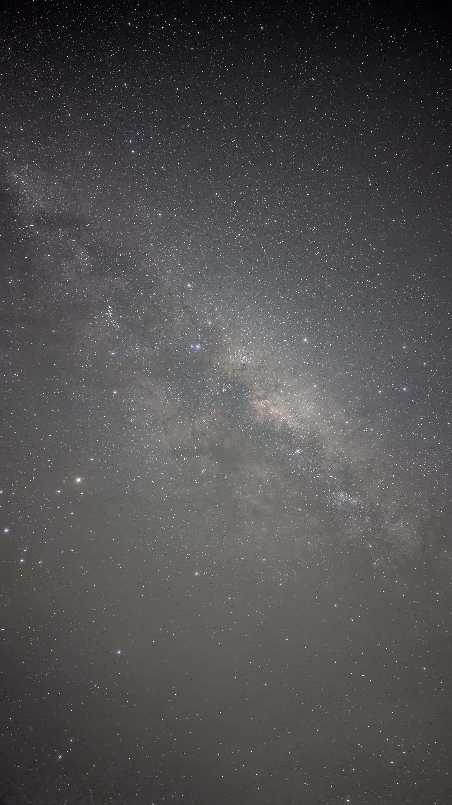

Linh's zone

Linh La
PhD Student · Deakin Applied Artificial Intelligence Initiative
Deakin University · Waurn Ponds, VIC, Australia
how I got here
My path here was not a straight line: I started with a love of space and stardust, moved to satellite systems (ADCS, orbit simulation), did a Master's in Earth Observation & Astrophysics at University of Science and Technology of Hanoi with an internship at Paris Observatory, then worked as a researcher at Vietnam National Space Center — and now I'm here, in Deakin University, making machine learning work for materials.
